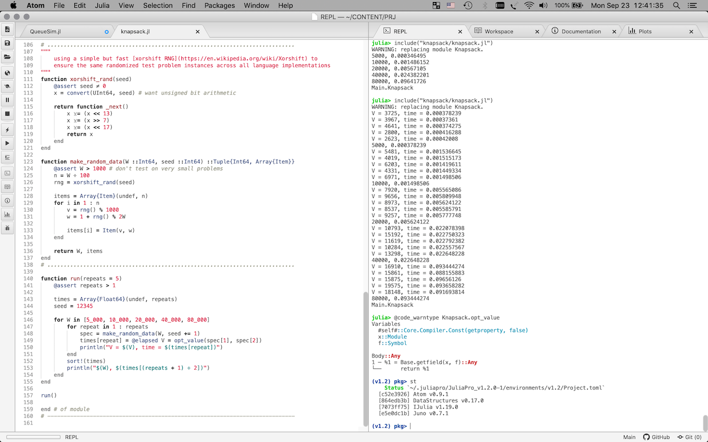

Suggested software setup
I have been using Julia successfully on MacOS and Linux (Fedora). I would suggest starting with a JuliaPro installer for this study. I’ve kept a few notes about my install process:
I’ve been using v1.2 so far, both REPL and Juno “IDE”.
- on MacOS you will need to have XCode tools installed, see the install guide
- on Linux the install guide mentions needing these libs (install via yum/dnf/apt-get/etc, I only needed to add xclip):
xclip libXScrnSaverapparently, starting with v1.2 what’s included appears to have changed: to minimize the installer size the “curated list of packages” are no longer part of the download itself. They can be installed via the usual
Pgkcommands. What’s different for “curated” packages is that the install will be configured to use Julia Computing’s github repo1 so that only the supposedly tested versions are available. Using Julia Computing’s repo will require authenticating to get their token. Keep this in mind if you plan to play with packages outside of their supported list.for REPL you can use Juno’s “REPL” tab. I find that doing so gives me experince similar to that of RStudio (a good thing):

- if you prefer not to rely on the IDE (which is not that great right now) and use REPL (which is very functional), you can use
juliabinary from your JuliaPro distribution:- MacOS:
/Applications/JuliaPro-<version>.app/Contents/Resources/julia/Contents/Resources/julia/bin/julia - Linux:
<install dir>/Julia/bin/julia
- MacOS:
FAQs and tips for fellow Julia explorers
General
- it is recommended to keep work code in a module (which could be as simple as keeping it inside a
module MyModule ... endblock) even for one-off stuff: onlike, say, R or Python Julia currently does not allow rebinding names of functions and types without restarting the REPL session. It seems to have gone through various iterations of solutions for this workflow need, but right now re-include()ing a module seems to be what’s guaranteed to work.- there is also Revise.jl (which I haven’t tried yet)
- see this discussion for more color
- another reason for working inside a module is because code will run faster (it will be JIT’ed sooner)
Juno
Juno is basically a few packages inside Atom. It is not quite an “IDE” at this point. Visual Studio Code might be a reasonable alternative, but in my experiments VSC had trouble with Julia v1.2. Juno comes bundled with a julia build from the same entity.
- as a result of being a collection of Atom packages, some things you might want to tweak in the UI could be dispersed over multiple places. For example:
- “Julia Client” package:
- you may wish to choose positioning of various tabs: Workspace, Documentation, Plots, REPL, etc
- “tool-bar” package:
- you might want to opt for smaller icons
- “Always Open Existing”, “Auto Reveal” settings might be of interest
- “Julia Client” package:
Books, other resources
There is a constantly growing list of resources at https://julialang.org. I list below some resources that I’ve either used myself or that seemed to stand out from the rest.
books about or based on Julia v1.0+:
- “Think Julia: How to Think Like a Computer Scientist” by Ben Lauwens and Allen Downey.
- this is the only “pure computer science” Julia book in my list.
- “A Deep Introduction to Julia for Data Science and Scientific Computing” by Chris Rackauckas.
- the author is very active in Julia space; this material seems very good (if you’re ok with notebooks).
- “Statistics with Julia: Fundamentals for Data Science, Machine Learning and Artificial Intelligence” by Hayden Klok and Yoni Nazarathy (2019 draft PDF free from the authors).
- based on a statistics course at the University of Queensland; Julia crash course in Chapter 1 and a handy “How-to” in Appendix A.
- “Algorithms for Optimization” by Mykel Kochenderfer and Tim Wheeler.
- advanced undergrad/grad course textbook on optimization; get it if optimization is your thing; Appendix A is a decent compact Julia intro.
- “Julia Programming for Operations Research, 2nd ed.” by Changhyun Kwon.
- another Julia crash course chapter; JuMP workship.
reference docs:
- “Julia 1.2 Documentation”, HTML and PDF.
- “Introducing Julia” Wikibook, a nice complement to the language manual.
video lectures, talks:
- “Intro to Julia 1.0” by Jane Herriman of Julia Computing.
- Videos from JuliaCon 2019 – some good stuff, particularly by Julia creators.
online practice:
- Julia Box from Julia Computing has a free plan.
- Julia exercism track looks like a good collection of exercises
Julia packages are maintained as git repos.↩